W7 Cosmetics
Vogliamo parlare di nuove collaborazioni? e parliamone.

Oggi sono qui con un'azieda inglese che offre prodotti di qualità ad un prezzo low coast, vi sto parlando di
W7 Cosmetics
La W7 cosmetics è nata nel 2002 dall'idea di due giovani imprenditori che hanno pensato bene di creare più di 300-400 prodotti per le donne che variana dalle unghie e quindi per una manicure impeccabile, alla cura e la bellezza del viso, vasta gamma dunque tra eyeliner, foondotinta, ciprie, rossetti, lipgloss, blush, mascara, ombretti e tutto ciò che occorre per il makeup femminile a prezzi non eccessivi e alla portata di tutte.
Sono stati gentilissimi ad omaggiarmi di 3 dei loro prodotti . .
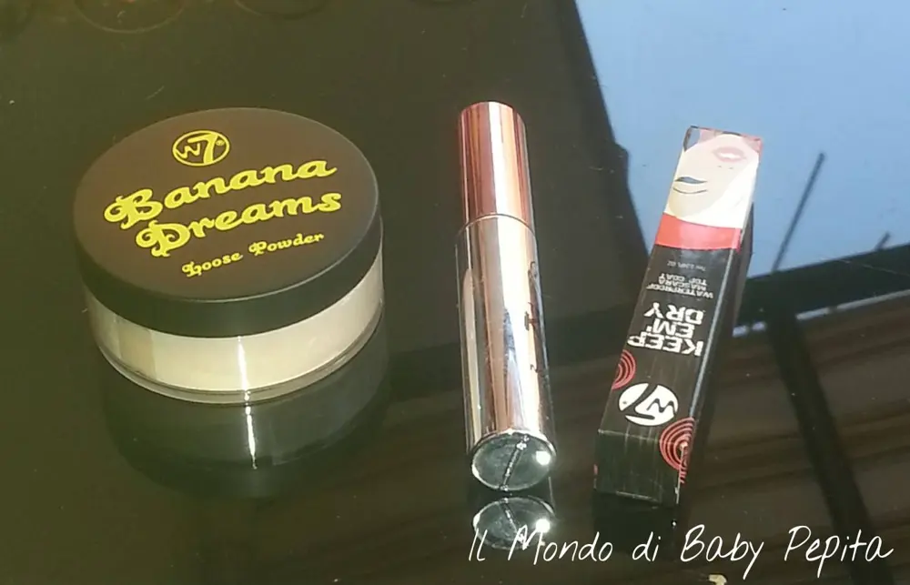
Questi in foto sono:Banana Dreams - Loose Power
Keep Em' Dry Waterproof Top Coat Mascara
Lipgloss - Tinted Kiss - Nourishing lip oil
Voglio ovviamente descriverveli nei dettagli!
BANANA DREAMS - LOOSE POWER
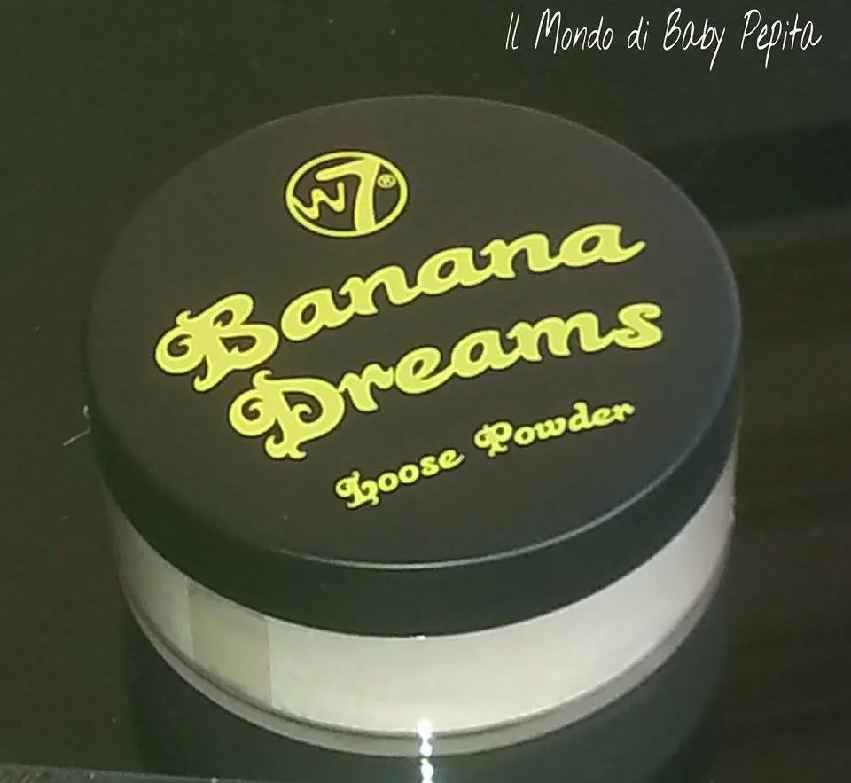
Sì, ok, il nome a me fa venire troppo da ridere ihihih
però le loro proprietà sono ottime ed è un prodotto davvero WOW per levigare la pelle.
Ma comunque questo colore e anche il nome è dato dalla colorazione gialla della polvere . .
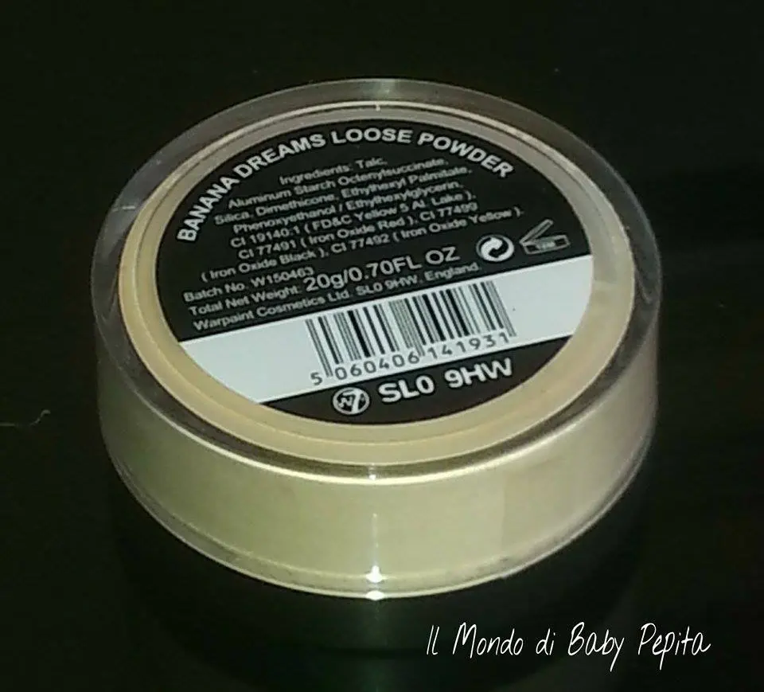
Questo prodotto è incredibile!

Non solo ammorbidisce la pelle e consente una base perfetta ma può essere utilizzato anche prima di applicare un qualsiasi fondo per uniformare il colore della pelle da macchie rosse qua e la!
Insomma aiuta ad unificare il tono della pelle, correggere le imperfezioni e a dare lucentezza.
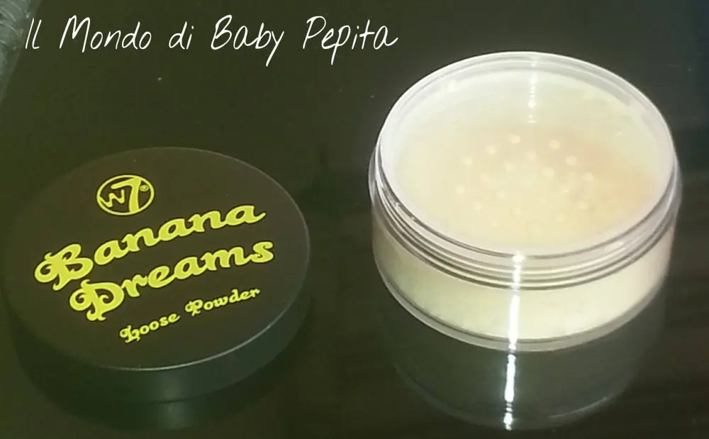
Cosa si vuole più da un prodotto in polvere?!
LIPGLOSS - TINTED KISS - Nourishing lip oil
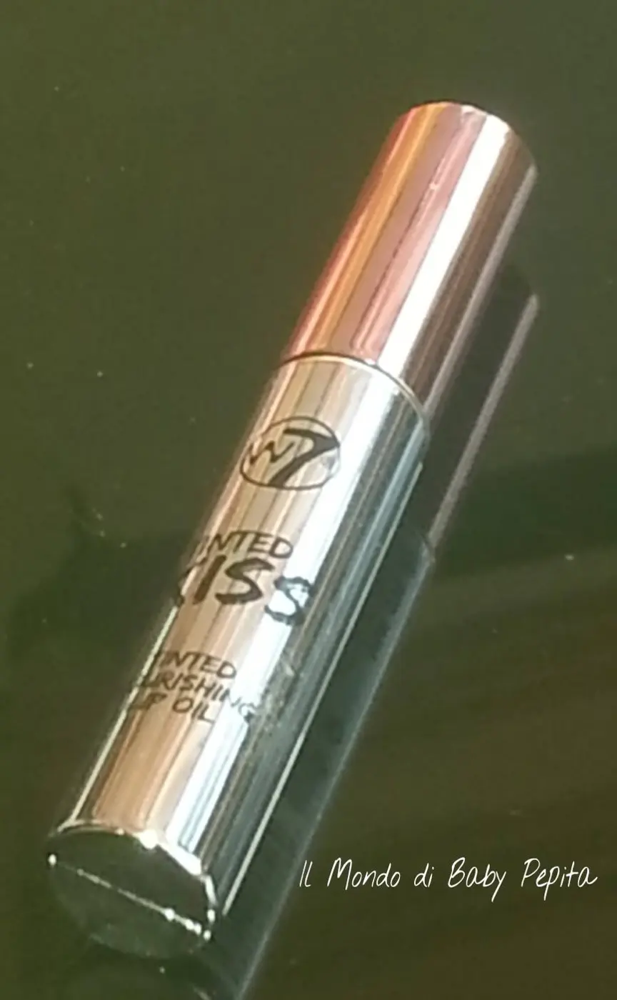
E' più che altro un olio nutriente per le labbra idratandole e colorandole leggermente al tempo stesso.
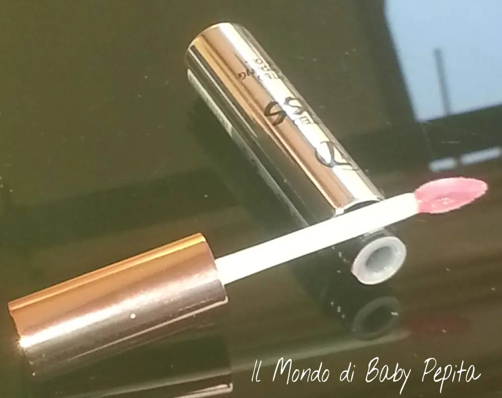
Quando ho provato per la prima volta questo gloss credevo di dare un tocco di rosa alle labbra, invece sulle labbra non è coloratissimo, o lameno a me si presenta più come un lucidalabbra per lo più trasparente. .
L'ho trovato a primo impatto un pò appiccicoso e non sembra per niente un olio scivoloso, ma ha degli ingredienti apposta per nutrire ed idratare le labbra, infatti devo essere sincera è durato più a lungo dei soliti lucidalabbra restando lucido per almeno 4 ore.
Ah e dimenticavo, ha un gusto a gusto melone :D
Tinted Kiss è disponibile in 4 tonalità:
Bellini,Cherry brandy, English rose, In the pink
Io ho ricevuto il IN THE PINK anche se in realtà non ho davvero trovato che ha aggiunto colore alle labbra o qualsiasi tipo di tinta, come si può vedere dalla foto qui sotto:
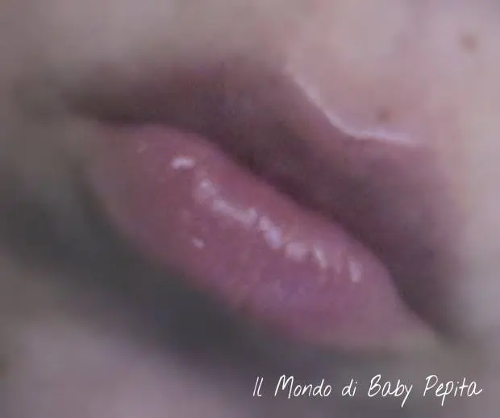
Personalmente il consiglio che posso dare è di non indossarlo se c'è una giornata di vento poichè, ripeto essendo appiccicoso vi creerebbe solo problemi con tutti i capelli che si attaccano sulle labbra per esempio ahah.
Del resto però come lucido per le labbra è davvero bello, dà quell'effetto di lucido che dura ma sarebbe bene usarlo, se si vuole colore, con un bel rossetto opaco o una matita.
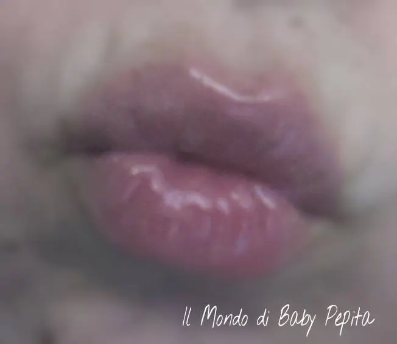
Keep Em' Dry Waterproof Top Coat Mascara
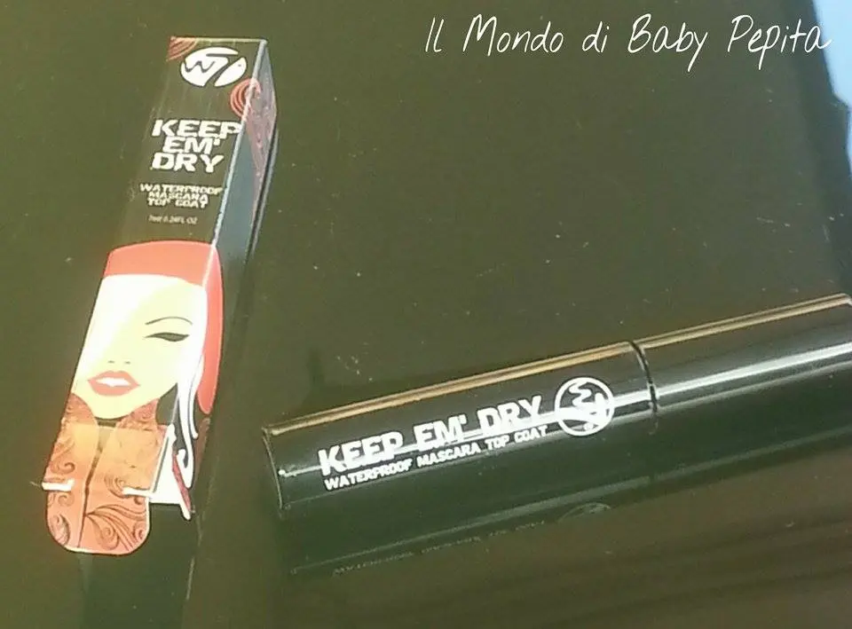
Applicare questo top coat su un qualsiasi tipo di mascara rende le ciglia magicamente impermeabili.
Ti tiene il mascara per tutto il giorno con qualsiasi tempo, cioè estate, inverno quindi pioggia o sudore, senza sporcare sotto gli occhi o creando grumi che poi cadono sul viso.
Resta dunque impeccabile!
Lo scovolino si presenta così, è uno scovolino allungante e quindi fa bene due lavori, ovvero allungare e proggere dall'acqua.
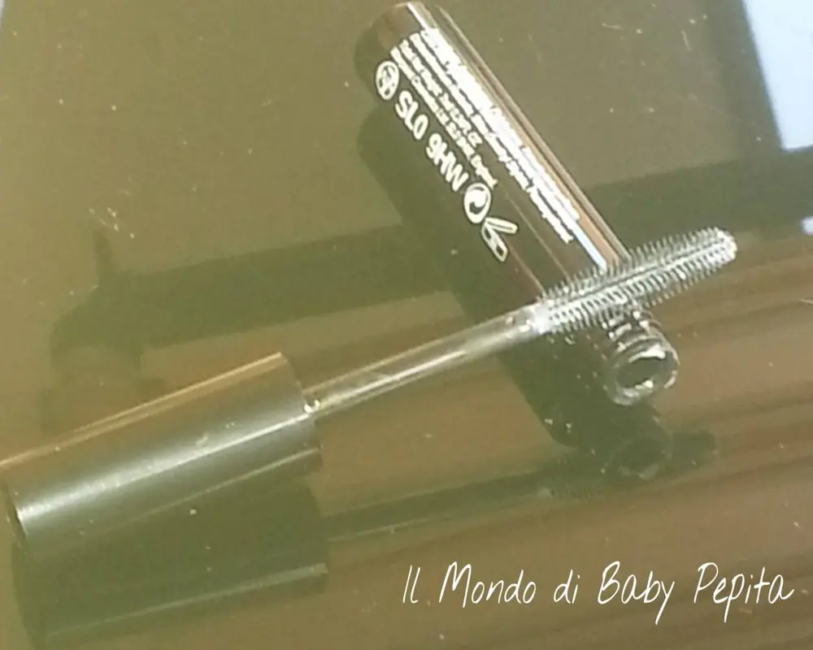
In realtà avendo usato già altri mascara che erano già waterproof direttamente senza l'uso di un secondo mascara per colorare, io all'inizio ho usato questo mascara direttamente sulle ciglia e non subito dopo aver applicato il mio rimmel di fiducia; e ho notato dopo una seconda passata, che era bianco, ma che allungava, la cosa mi è parsa strana ahahahMi guardavo allo specchio e dicevo da sola "ma questo mascara è andato a male?" ahahhaah ignorando che si doveva usare in un secondo momento. Ho però passato successivamente il mio mascara sopra e devo dire che ha dato poi l'effetto che si aspettava, quindi credo o prima o dopo comunque fa il suo lavoro a dovere.
Infatti, non mi sono struccata la sera prima di andare a dormmire ma il mattino seguente (lo so, sono da linciare ahahah), ed era ancora lì perfetto, che non voleva togliersi nemmeno con i detergenti.
Quindi ottimo prodotto, dovete provarlo assolutamente, anche se l'unica pecca è proprio quella di dover usare due mascara, se fosse tutto in uno sarebbe ancor più perfetto.
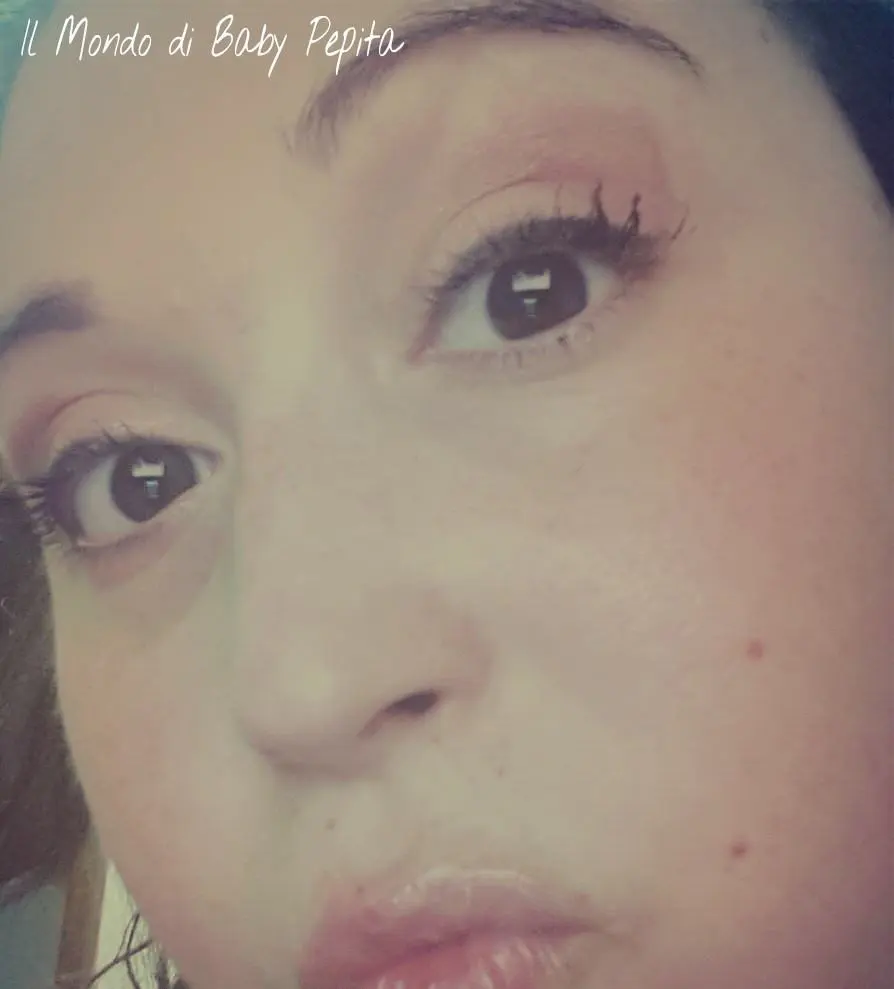
TUTTO QUESTO POTRETE TROVARLO SUL SITO DELLA W7 COSMETICSVI LINKO QUI SOTTO IL LORO SITO, IN INGLESE MA PERFETTAMENTE COMPRENSIBILE PER QUALSIASI ACQUISTO:
http://www.w7cosmetics.co.uk/
VI LINKO ANCHE FACEBOOK CHE IO SEGUO GIA' DA TEMPO:
https://www.facebook.com/W7makeup?fref=ts
Per tutto il resto o informazioni contattatemi alll'email dolce.lamu@hotmail.com oppure seguitemi sulla mia pagina facebook https://m.facebook.com/IlMondodiBabyPepita